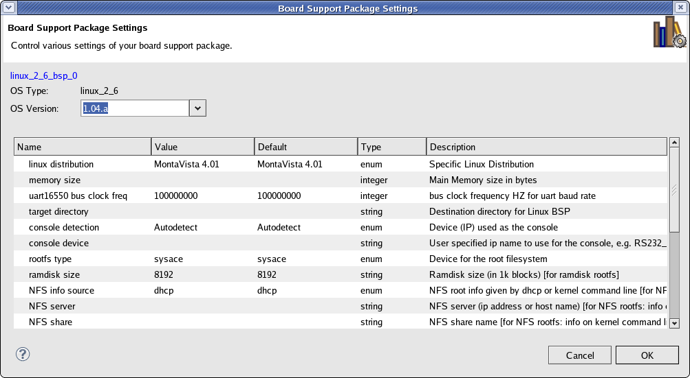

Board support packages (SDK)
Board support packages (external tools)
Software repositories
To configure an existing Board Support Package (BSP) project created for use with external tools, do the following:
If the Build Automatically option is selected in the Project menu, your BSP is regenerated with your new settings applied.


Board support packages (SDK)
Board support packages (external tools)
Software repositories

Generating a board support package (external tools)
Setting up software repositories